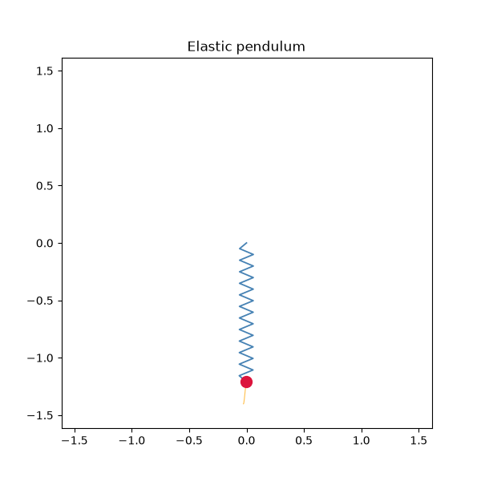
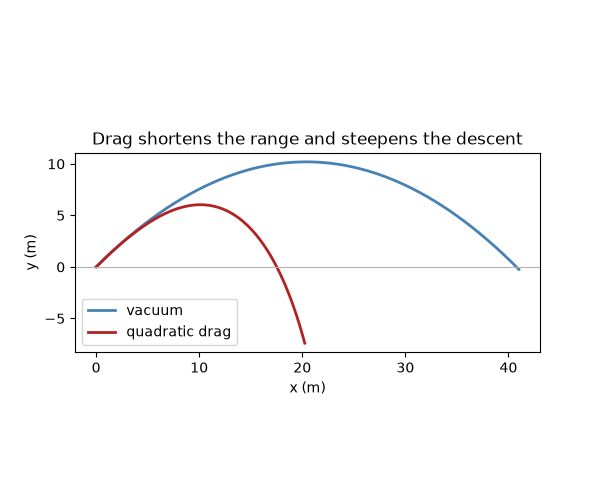

Note
Go to the end to download the full example code.
Free fall with an oblique velocity: the cannonball problem#
ProjectileMotion is
free fall under constant gravity \(g\) with an oblique initial
velocity – the historical “cannonball” problem. Without drag it is the
separable Hamiltonian
whose exact solution is Galileo’s parabolic trajectory
\(x(t) = v_{x0} t,\ y(t) = y_0 + v_{y0} t - \tfrac12 g t^2\). With
drag_coeff \(> 0\) a quadratic air-resistance force
\(F_\text{drag} = -c\,|v|\,v\) is added, making the system
genuinely dissipative (energy decreases monotonically; there is no
closed-form trajectory). Fires a projectile at 45 degrees and shows:
Its trajectory next to Galileo’s closed-form parabola – since the force is constant, the symplectic Yoshida4 integrator reproduces the exact solution to floating-point precision, at any step size.
The effect of quadratic air drag: shorter range, steeper descent, and monotonically decreasing energy (drag is genuinely non-conservative, so it needs
method="rk4"– the symplectic backends only see the conservative gravity force and would silently ignoredrag_coeff).
import matplotlib.pyplot as plt
import numpy as np
from physicskit.classical.systems.newtonian import ProjectileMotion

Vacuum trajectory vs. the analytic parabola#
Because the force is constant, a symplectic integrator reproduces Galileo’s exact closed-form parabola to floating-point precision, at any step size – not merely “small energy drift.”
proj = ProjectileMotion.from_launch(speed=20.0, angle_deg=45.0, g=9.81)
result = proj.integrate((0, 2.9), dt=1e-3, method="yoshida4")
x_an, y_an = ProjectileMotion.analytic_trajectory(20.0, 45.0, 9.81, result.t)
rng, h_max = ProjectileMotion.range_and_max_height(speed=20.0, angle_deg=45.0, g=9.81)
print(f"closed-form range = {rng:.3f} m, max height = {h_max:.3f} m")
print(f"max |numeric - analytic| position error: {np.max(np.abs(result.q[:, 1] - y_an)):.2e} m")
fig1, axes = plt.subplots(1, 2, figsize=(9, 4))
axes[0].plot(result.q[:, 0], result.q[:, 1], color="steelblue", lw=2, label="numeric (Yoshida4)")
axes[0].plot(x_an, y_an, "--", color="orange", lw=1.2, label="analytic")
axes[0].axhline(0, color="0.7", lw=0.8)
axes[0].set_xlabel("x (m)")
axes[0].set_ylabel("y (m)")
axes[0].set_title("Trajectory")
axes[0].legend()
axes[0].set_aspect("equal")
axes[1].plot(result.t, np.abs(result.q[:, 1] - y_an), color="crimson")
axes[1].set_xlabel("t (s)")
axes[1].set_ylabel("|y_numeric - y_analytic| (m)")
axes[1].set_title("Numeric vs. closed form")
fig1.tight_layout()

Exception ignored while calling ctypes callback function <function ExecutionEngine._raw_object_cache_notify at 0x1117e4250>:
Traceback (most recent call last):
File "/Library/Frameworks/Python.framework/Versions/3.14/lib/python3.14/site-packages/llvmlite/binding/executionengine.py", line 178, in _raw_object_cache_notify
def _raw_object_cache_notify(self, data):
KeyboardInterrupt:
Exception ignored while calling ctypes callback function <function ExecutionEngine._raw_object_cache_notify at 0x1117e4250>:
Traceback (most recent call last):
File "/Library/Frameworks/Python.framework/Versions/3.14/lib/python3.14/site-packages/llvmlite/binding/executionengine.py", line 178, in _raw_object_cache_notify
def _raw_object_cache_notify(self, data):
KeyboardInterrupt:
closed-form range = 40.775 m, max height = 10.194 m
max |numeric - analytic| position error: 3.33e-12 m
Vacuum vs. quadratic air drag#
Real cannonballs feel quadratic air drag, \(F_\text{drag} = -k |v| v\).
This depends on velocity (momentum), so it cannot enter a separable
force(q, t) callback – it is invisible to Verlet/Yoshida4, which
is why ProjectileMotion refuses
method="yoshida4"/"verlet" once drag_coeff is nonzero,
rather than silently dropping the drag term. Use method="rk4"
instead, where energy now decreases monotonically – the whole point
of drag.
vac = ProjectileMotion.from_launch(speed=20.0, angle_deg=45.0, g=9.81)
drag = ProjectileMotion.from_launch(speed=20.0, angle_deg=45.0, g=9.81, drag_coeff=0.05)
res_vac = vac.integrate((0, 2.9), dt=1e-3, method="yoshida4")
res_drag = drag.integrate((0, 2.9), dt=1e-3, method="rk4")
print(f"vacuum final energy: {res_vac.energy[-1]:.3f} J (started at {res_vac.energy[0]:.3f} J)")
print(f"drag final energy: {res_drag.energy[-1]:.3f} J (started at {res_drag.energy[0]:.3f} J, monotonic decrease)")
fig2, ax = plt.subplots(figsize=(6, 5))
ax.plot(res_vac.q[:, 0], res_vac.q[:, 1], color="steelblue", lw=2, label="vacuum")
ax.plot(res_drag.q[:, 0], res_drag.q[:, 1], color="firebrick", lw=2, label="quadratic drag")
ax.axhline(0, color="0.7", lw=0.8)
ax.set_xlabel("x (m)")
ax.set_ylabel("y (m)")
ax.set_title("Drag shortens the range and steepens the descent")
ax.legend()
ax.set_aspect("equal")

vacuum final energy: 200.000 J (started at 200.000 J)
drag final energy: 1.723 J (started at 200.000 J, monotonic decrease)
See also KeplerSystem, which is the
same “central conservative force, integrated symplectically” idea,
generalized from uniform gravity down to an inverse-square field.
plt.show()
Total running time of the script: (0 minutes 0.921 seconds)